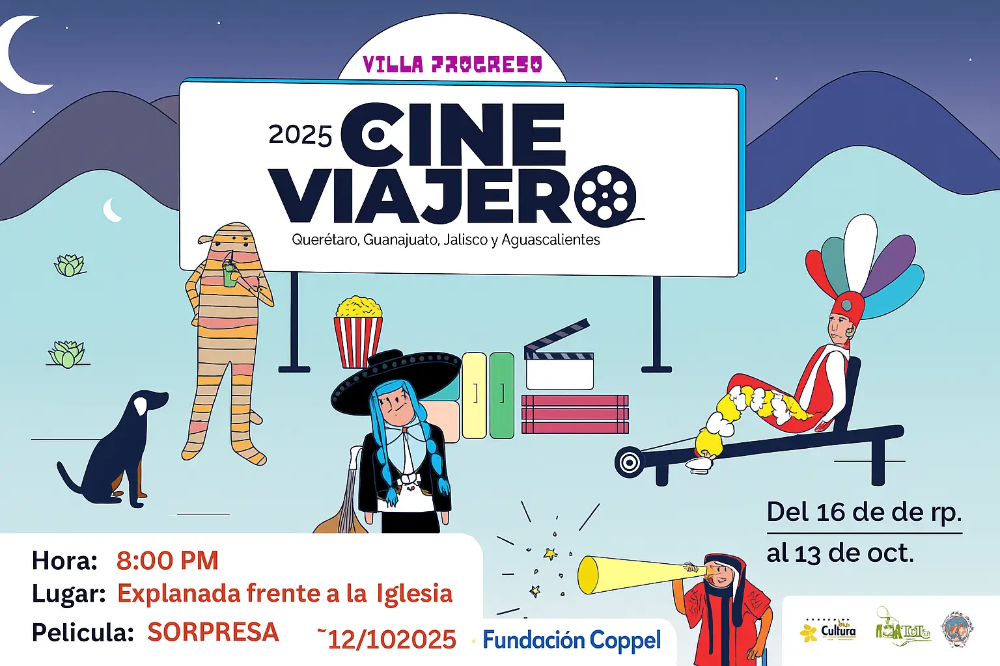

Cine Viajero
Cine Viajero es un proyecto independiente que recorre varios estados del país llevando el cine a distintas comunidades.
Gracias al apoyo de Fundación Cinépolis y Fundación Coppel, a través de Cine Móvil Toto, esta iniciativa llega a Villa Progreso para ofrecernos una noche especial de cine al aire libre. 🎥✨
La Casa de Cultura de Villa Progreso trae este evento con la intención de fomentar el interés por el cine, las artes y fortalecer la convivencia en comunidad. 🍿